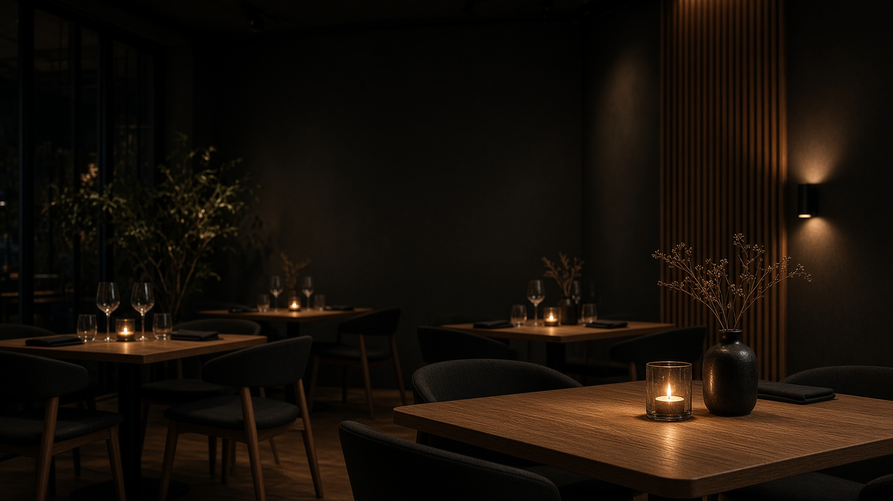

Digitala upplevelser med egen karaktär
Första intrycket.
En helt annan känsla.
Ditt företag har sin egen historia. Din hemsida ska kännas likadan. Upptäck tre uttryck för hur den kan berättas.



Digitala upplevelser med egen karaktär
Ditt företag har sin egen historia. Din hemsida ska kännas likadan. Upptäck tre uttryck för hur den kan berättas.

Ditt företag. Ditt uttryck.
Demosidorna visar möjligheterna. Färger, bilder, innehåll och funktioner formas sedan efter ditt företag och människorna du vill nå.
Hitta ditt uttryck ↑